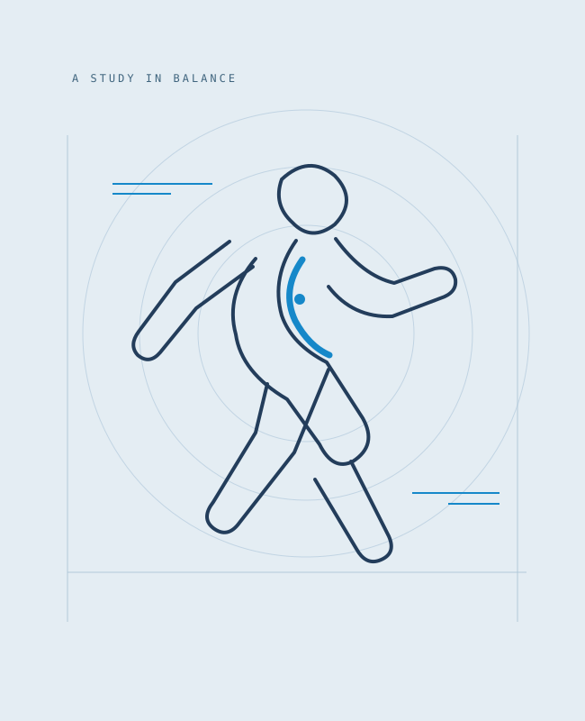

Listen & assess.
Discuss your history and priorities. Any examination is explained, with consent and time for questions.
Initial appointment · sample 90 minutesCHIROPRACTIC CARE · CLAPHAM & CHELSEA
A considered conversation about your movement, your concerns and the options available to you. Clear information, at your pace.

WHAT BRINGS YOU HERE?
Explore common reasons people seek advice.
These are conversation topics, not diagnoses.
Discuss how long it has been troubling you, everyday activities and what you hope to understand. Assessment helps determine whether care or referral is appropriate.
Prepare a conversation ↗General service information only, not medical advice. For urgent or worrying symptoms, contact an appropriate healthcare service. In an emergency, call 999.
WHAT TO EXPECT
Discuss your history and priorities. Any examination is explained, with consent and time for questions.
Initial appointment · sample 90 minutesTalk through possible approaches, risks, benefits, alternatives and fees. Referral may be appropriate.
Decisions made togetherIf care is agreed, review how things are going. Response varies; no particular result or session count is guaranteed.
Individual review, at your paceTHE PEOPLE YOU CAN ASK
Movement & activity conversations
Everyday movement & desk comfort
Individual care planning conversations
Fictional team identities from the brief. No qualifications, registration, specialist certification or clinical experience are verified or asserted.
BEFORE YOU DECIDE
30 minutes · information only, no assessment or treatment
Sample 90-minute appointment · care subject to suitability and consent
Sample 45-minute appointment · discussed after assessment
*Illustrative introductory option, confirmed directly. All fees are sample brief data. Package scope and price require a written quote; no unsupported package saving is advertised. Confirm insurance coverage with your insurer and provider before attending.
A SMALL FIRST STEP
Choose your preferences and review them here. No appointment is made. Please contact the clinic directly for a real enquiry.
This demonstration asks for contact preferences only. Please keep medical history and sensitive health information out of this form.
That depends on assessment, clinical suitability, your preferences and informed consent. Nothing here guarantees treatment or an outcome.
Use the General Chiropractic Council's official register and check the specific practitioner's details.
General Chiropractic Council ↗No. It creates a temporary summary on this page. Reloading clears all preferences.